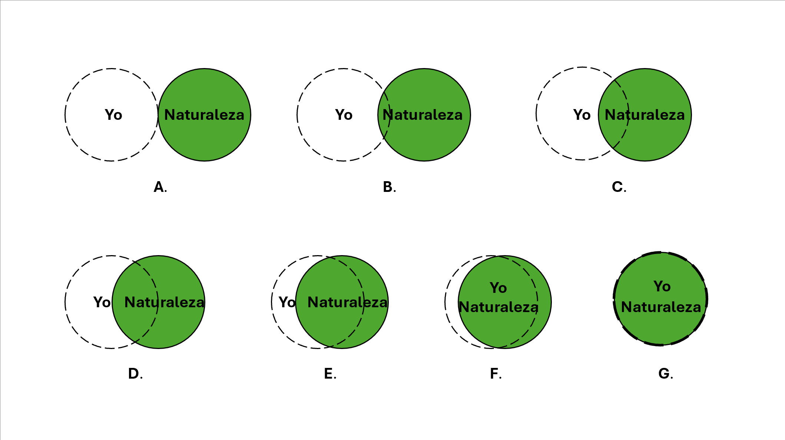
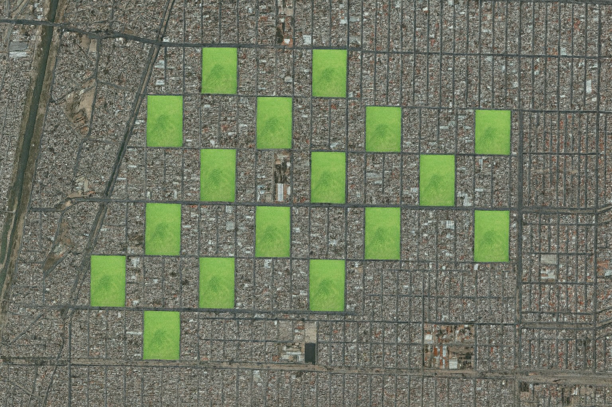
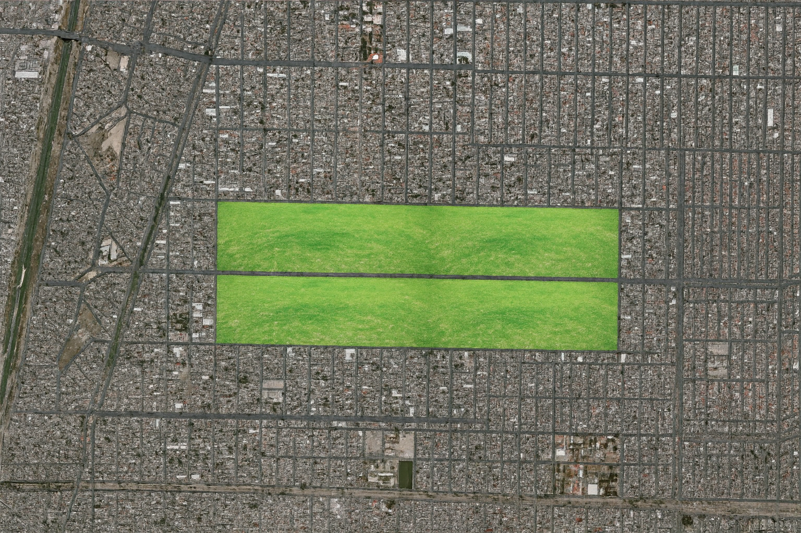

<!DOCTYPE html>
<html lang="en">
<head>
  <meta charset="UTF-8" />
  <meta name="viewport" content="width=device-width, initial-scale=1.0" />
  <title>Zonas verdes y vivienda</title>
  <link rel="icon" type="image/png" sizes="32x32" href="img/icon.png" />
  <script src="https://unpkg.com/jspsych@7.3.1"></script>
  <script src="https://unpkg.com/@jspsych/plugin-html-keyboard-response@1.1.2"></script>
  <script src="https://unpkg.com/@jspsych/plugin-html-button-response@1.1.2"></script>
  <script src="https://unpkg.com/@jspsych/plugin-image-keyboard-response@1.1.2"></script>
  <script src="https://unpkg.com/@jspsych/plugin-image-button-response@1.2.0"></script>
  <script src="https://unpkg.com/@jspsych/plugin-survey-multi-choice@1.1.2"></script>
  <script src="https://unpkg.com/@jspsych/plugin-survey-multi-select@1.1.3"></script>
  <script src="https://unpkg.com/@jspsych/plugin-survey-text@1.1.2"></script>
  <script src="https://unpkg.com/@jspsych/plugin-survey-likert@2.1.0"></script>
  <script src="https://unpkg.com/@jspsych/plugin-preload@1.1.2"></script>
  <script src="https://unpkg.com/@jspsych/plugin-fullscreen@1.1.2"></script>
  <script src="https://unpkg.com/@jspsych/plugin-html-slider-response@1.1.3"></script>
  <script src="https://unpkg.com/@jspsych/plugin-browser-check@2.1.0"></script>
  <link href="https://unpkg.com/jspsych@7.3.1/css/jspsych.css" rel="stylesheet" type="text/css" />
  <link rel="stylesheet" href="css/psstyle.css" />
  <script type="text/javascript" src="assets/assets.js"></script>
  <style></style>
</head>

<body>
    <script>
    /* initialize jsPsych and enter redirect URL */
    var jsPsych = initJsPsych({
      experiment_width: 1200,
      override_safe_mode: true,
      on_finish: function () {
        jsPsych.data.displayData('csv');
        //window.location = "https://transit.nicequest.com/transit/participation?tp=co_0&c=ok&ticket=" + encodeURIComponent(ticket);
      },
    });

    /* capture info from Prolific */
    var subject_id = jsPsych.data.getURLVariable("ticket"); //Modify if use a different platform
    jsPsych.data.addProperties({
      subject_id: subject_id,
    });
    /* IF WE WANT TO MAKE subject ID */
    var subj_code; // a variable that later stores a random subject code

    function makeid(length) {
      var result = "";
      var characters =
        "ABCDEFGHIJKLMNOPQRSTUVWXYZabcdefghijklmnopqrstuvwxyz0123456789";
      var charactersLength = characters.length;
      for (var i = 0; i < length; i++) {
        result += characters.charAt(
          Math.floor(Math.random() * charactersLength)
        );
      }
      return result;
    } // this function creates a random subject code using the characters listed above

    subj_code = makeid(12); // generate the actual code (12 strings)

    jsPsych.data.addProperties({
      pid: subj_code,
      PROLIFIC_PID: subject_id,
    });

    /* create timeline */
    var timeline = [];

    var device_check = {
      type: jsPsychBrowserCheck,
      inclusion_function: (data) => {
        // Store width and height in jsPsych data
        jsPsych.data.addProperties({
          screen_width: data.width,
          screen_height: data.height
        });
        console.log(`Dimensions are: ${data.width} X ${data.height}`);
        // Exclude very small resolutions
        return data.width >= 360 && data.height >= 500;
      },
      exclusion_message: (data) => {
        return `<p>Your screen resolution is too small to complete this experiment.</p>
            <p>Please use a device with at least 360 x 500 pixels.</p>`;
      },
    };
timeline.push(device_check);

    var imagePaths = ["img/choice.png", "img/thumbnail.png", "img/SiO.png", 
    "img/photos/LSHsat.png", "img/photos/LSPsat.png",
    "img/photos/structure1.png", "img/photos/structure2.png", "img/photos/structure3.png", "img/photos/structure4.png", "img/photos/structure5.png",
    "img/photos/pruning1.png", "img/photos/pruning2.png", "img/photos/pruning3.png",
    "img/photos/LSH1.png", "img/photos/LSH2.png", "img/photos/LSH3.png", "img/photos/LSH4.png", "img/photos/LSH5.png",
    "img/photos/LSP1.png", "img/photos/LSP2.png", "img/photos/LSP3.png", "img/photos/LSP4.png", "img/photos/LSP5.png"];

var preload = {
      type: jsPsychPreload,
      images: imagePaths
    };
timeline.push(preload);

var welcome = {
      type: jsPsychHtmlButtonResponse,
      stimulus: `
         <h1>Bienvenido a este estudio</h1>
         <body>
          <p>En este experimento observarás diferentes opciones de entre las que deberás elegir tu favorita.</p>
          <p>Por favor, comience el estudio solo cuando te encuentres en un entorno tranquilo. No debe haber distracciones y no debe ser interrumpido durante los próximos <b>5 minutos</b>.</p>
          <p>Apague cualquier música o televisión que puedan distraerte.</p>
          <p><b><span style="color:#980000;">Importante</span></b>: Este estudio puede dar errores en el navegador Safari</b>. Si estás usando Safari, cambia de navegador antes de continuar.</p>
          <div id="button-container" style="text-align: center; height: 60px; margin-top: 20px;">
                <!-- Button will be dynamically added here -->
          </div>
        </body>
        `,
      choices: [], // No choices at the start
      on_load: function () {
        // Create the button element
        var button = document.createElement("button");
        button.innerHTML = "Continuar";
        button.className = "jspsych-btn";
        button.style.display = "none";
        button.style.padding = "40px 25px";

        // Append the button to the container
        var container = document.getElementById("button-container");
        container.appendChild(button);

        // Show the button after 10 seconds
        setTimeout(() => {
          button.style.display = "inline-block";
        }, 3000);

        // Add event listener to the button
        button.addEventListener("click", () => {
          jsPsych.finishTrial(); // Move to the next trial
        });
      },
    };
timeline.push(welcome);

/*Secciones del cuestionario:
1. Conexión con la naturaleza "Self-in-Other" [DONE]
2. Preferencias con el barrio [DONE]
3. Choice experiment [DONE]
4. Demographics [DONE]
*/

// Sección 1: Conexión con la naturaleza "Self-in-Other"
var section1_1 = {
  type: jsPsychHtmlButtonResponse,
  stimulus: `
    <p>En la imagen de debajo puedes ver una representación de diferentes maneras de sentirse conectado/a con la naturaleza.</p> 
    <p>Si A representa la opción menos conectada con la naturaleza y G la opción más conectada, ¿dónde te situarías tú?</p>
    <div id="img-container" style="text-align: center; height: 60px; margin-top: 20px; margin-bottom:300px;">
        
    </div>
    `,
  choices: ['A', 'B', 'C', 'D', 'E', 'F', 'G'],
  on_finish: function (data) {
    var response = data.response;
    var options = ['A', 'B', 'C', 'D', 'E', 'F', 'G'];
    var connection_score = options.indexOf(response) + 1;
    jsPsych.data.addProperties({
      connection_score: connection_score,
    });
  },
};
timeline.push(section1_1);

var section1_2 = {
  type: jsPsychHtmlSliderResponse,
  stimulus: `
    <p>Ahora, utiliza el siguiente botón deslizante para indicar <strong>cómo de importante es para ti estar en contacto con la naturaleza en tu vida diaria.</strong></p>
    `,
  button_label: "Siguiente",
  require_movement: true,
  labels: ['Nada importante', 'Poco importante', 'Bastante importante', 'Muy importante'],
  on_finish: function (data) {
    var importance_score = data.response;
    jsPsych.data.addProperties({
      importance_score: importance_score,
    });
  },
};
timeline.push(section1_2);

// Sección 2: Preferencias con el barrio
var instructions_section2 = {
  type: jsPsychHtmlButtonResponse,
  stimulus: `
    <h2>Preferencias sobre el barrio</h2>
    <p>A continuación, encontrarás una serie de afirmaciones relacionadas con las características que valoras en un barrio o zona para vivir.</p>
    <p>Por favor, indica tu grado de acuerdo o desacuerdo con cada una de las siguientes afirmaciones utilizando la escala proporcionada.</p>
    `,
  choices: ['Comenzar'],
};
timeline.push(instructions_section2);

var labels = [
    "Nada importante",
    "Poco importante",
    "Neutral",
    "Bastante importante",
    "Muy importante"
  ];
var section2_1 = {
  type: jsPsychSurveyLikert,
  questions: [
    {
      prompt: "<strong>Cercano a sitios para la compra (supermercados, tiendas, etc.)</strong>",
      labels: labels,
    },
    {
      prompt: "<strong>Cercano a restaurantes, bares y cafeterías</strong>",
      labels: labels,
    },
    {
      prompt: "<strong>Cercano a mi lugar de trabajo o estudio</strong>",
      labels: labels,
    },
    {
      prompt: "<strong>Cercano a buenos colegios/institutos</strong>",
      labels: labels,
    },
    {
      prompt: "<strong>Bajo índice de criminalidad/buena seguridad en la zona</strong>",
      labels: labels,
    },
    {
      prompt: "<strong>Cuenta con zonas de juegos para niños</strong>",
      labels: labels,
    },
    {
      prompt: "<strong>Cercano a instalaciones deportivas (gimnasios, pistas, etc.)</strong>",
      labels: labels,
    },
    {
      prompt: "<strong>Cuenta con zonas verdes y parques cercanos</strong>",
      labels: labels,
    },
    {
      prompt: "<strong>Cuenta con buena biodiversidad (variedad de plantas, pájaros, etc.)</strong>",
      labels: labels,
    },
  ],
  randomize_question_order: true,
  on_start: function(trial) {
    trial.questions = trial.questions.map(function(q) {
      q.required = true;
      return q;
    });
  },
  button_label: "Siguiente",
};
timeline.push(section2_1);

var section2_2 = {
  type: jsPsychSurveyMultiChoice,
  questions: [
    {
      prompt: "Centrándonos ahora en las zonas verdes de un barrio, ¿crees que el tipo de vegetación que contiene (árboles, arbustos y/o hierba) o el tipo de manejo de la cobertura herbácea en cuestiones de poda, afecta la biodiversidad que una zona verde puede alojar?",
      name: "biodiversity_belief",
      options: ["Sí", "No", "No estoy seguro/a"],
      required: true,
    },
  ],
  button_label: "Siguiente",
  on_finish: function (data) {
    jsPsych.data.addProperties({
      biodiversity_belief: data.response.biodiversity_belief,
    });
    //console.log(jsPsych.data.get().last(1).select('biodiversity_belief').values[0]);
  },
};
timeline.push(section2_2);

var section2_2feedback = {
    type: jsPsychHtmlButtonResponse,
    stimulus: function () {
      // find the trial that contains the biodiversity_belief response
      var respEntry = jsPsych.data
        .get()
        .filter({ trial_type: "survey-multi-choice" })
        .values()
        .find(function (d) {
          return d.response && d.response.biodiversity_belief !== undefined;
        });
      var answer = respEntry ? respEntry.response.biodiversity_belief : null;
      var message = "<h2>Sobre tu respuesta</h2>";
      if (answer === "Sí") {
        message +=
          "<p>Has indicado que <strong>SÍ</strong> crees que el tipo de vegetación o su manejo tengan un efecto sobre la biodiversidad. <br>Según estudios recientes, en efecto se ha observado que la biodiversidad aumenta en áreas con mayor cantidad de árboles combinados con arbustos y hierba, y cuanto menos se pode la cobertura herbácea.</p>";
      } else if (answer === "No") {
        message +=
          "<p>Has indicado que <strong>NO</strong> crees que el tipo de vegetación o su manejo tengan un efecto sobre la biodiversidad. <br>Según estudios recientes, sí se ha observado que la biodiversidad aumenta en áreas con mayor cantidad de árboles combinados con arbustos y hierba, y cuanto menos se pode la cobertura herbácea.</p>";
      } else if (answer === "No estoy seguro/a") {
        message +=
          "<p>Has indicado que <strong>no estás seguro/a</strong> de si el tipo de vegetación o su manejo tengan un efecto sobre la biodiversidad. <br>Según estudios recientes, sí se ha observado que la biodiversidad aumenta en áreas con mayor cantidad de árboles combinados con arbustos y hierba, y cuanto menos se pode la cobertura herbácea.</p>";
      } else {
        message +=
          "<p>No se ha detectado tu respuesta. <br>Según estudios recientes, sí se ha observado que la biodiversidad aumenta en áreas con mayor cantidad de árboles combinados con arbustos y hierba, y cuanto menos se pode la cobertura herbácea.</p>";
      }
      return message;
    },
    choices: ["Continuar"],
    on_load: function () {
      const container = jsPsych.getDisplayElement();
      const btn = container.querySelector('button.jspsych-btn');
      if (btn) {
      btn.style.display = 'none';
      setTimeout(() => {
        btn.style.display = 'inline-block';
      }, 5000);
      }
    },
    on_finish: function (data) {
      // store the recorded answer as a property of this trial for easier downstream access
      var respEntry = jsPsych.data
        .get()
        .filter({ trial_type: "survey-multi-choice" })
        .values()
        .find(function (d) {
          return d.response && d.response.biodiversity_belief !== undefined;
        });
      data.biodiversity_belief = respEntry ? respEntry.response.biodiversity_belief : null;
    },
  };
timeline.push(section2_2feedback);

var section2_3 = {
  type: jsPsychSurveyLikert,
  preamble: `
    <p>Teniendo esto en cuenta, ¿cómo de importante son para ti los siguientes tipos de diversidad en tu barrio?</p>
    `,
  questions: [
    {
      prompt: "<strong>Diversidad de aves</strong>",
      labels: labels,
    },
    {
      prompt: "<strong>Diversidad de plantas</strong>",
      labels: labels,
    },
    {
      prompt: "<strong>Diversidad de insectos</strong>",
      labels: labels,
    },
  ],
  randomize_question_order: true,
  on_start: function(trial) {
    trial.questions = trial.questions.map(function(q) {
      q.required = true;
      return q;
    });
  },
  button_label: "Siguiente",
};
timeline.push(section2_3);

// Sección 3: Choice experiment
var section3_1 = {
  type: jsPsychHtmlButtonResponse,
  stimulus: `
  <p>Debajo puedes ver dos imágenes satelitales de dos barrios. 
      Imagina que ambos son idénticos en todos los aspectos (transporte, servicios, ocio, etc.), 
      excepto en la distribución de sus zonas verdes (aunque la extensión total es la misma). 
      Por favor, escoge el barrio en el cual preferirías residir.</p>
  <br>
  <div id="image-pair" style="display:flex; justify-content:center; gap:20px; flex-wrap:wrap; margin-top:20px;">
    <div style="flex:1 1 45%; max-width:45%; min-width:200px; text-align:center;">
      
      <p>Zonas verdes dispersas e intercaladas con zonas construidas</p>
      <button class="jspsych-btn" style="border:0; background:transparent; padding:10px;" onclick="jsPsych.finishTrial({choice:'LSH'})">
              <div style="width:100%; height:100%; display:flex; align-items:center; justify-content:center; border:2px solid #9fe0a6; border-radius:6px; background:#ccffcc; font-weight:bold; color:#004d00;">
                Prefiero zonas verdes dispersas
              </div>
      </button>
    </div>
    <div style="flex:1 1 45%; max-width:45%; min-width:200px; text-align:center;">
      
      <p>Zonas verdes concentradas y aparte de las zonas construidas</p>
      <button class="jspsych-btn" style="border:0; background:transparent; padding:10px;" onclick="jsPsych.finishTrial({choice:'LSP'})">
              <div style="width:100%; height:100%; display:flex; align-items:center; justify-content:center; border:2px solid #9fe0a6; border-radius:6px; background:#ccffcc; font-weight:bold; color:#004d00;">
                Prefiero zonas verdes concentradas
              </div>
      </button>
    </div>
  </div>
  `,
  choices: [],
};
timeline.push(section3_1);

var instructions_section3 = {
      type: jsPsychHtmlButtonResponse,
      stimulus: `
        <h1>Instrucciones</h1>
        <body>
        <p>A continuación vas a observar varios escenarios en los que deberás elegir tu opción favorita de entre dos posibles.</p>
        <p>En cada escenario, tendrás disponibles dos viñetas que representan dos opciones de vivienda diferente con características distintas.
        Para cada opción, deberás elegir la que prefieras haciendo clic en el botón inferior a dicha opción.</p>
        <div id="button-container" style="text-align: center; height: 60px; margin-top: 20px;">
                <!-- Button will be dynamically added here -->
        </div>
        </body>
        `,
      choices: [], // No choices at the start
      on_load: function () {
        // Create the button element
        var button = document.createElement("button");
        button.innerHTML = "Entiendo las instrucciones y estoy listo para comenzar";
        button.className = "jspsych-btn";
        button.style.display = "none";
        button.style.padding = "40px 25px";

        // Append the button to the container
        var container = document.getElementById("button-container");
        container.appendChild(button);

        // Show the button after 10 seconds
        setTimeout(() => {
          button.style.display = "inline-block";
        }, 3000);

        // Add event listener to the button
        button.addEventListener("click", () => {
          jsPsych.finishTrial(); // Move to the next trial
        });
      },
    };
timeline.push(instructions_section3);

/* define fixation cross to show between trials - for practice trials and main task */
var fixation = {
      type: jsPsychHtmlKeyboardResponse,
      stimulus: `<div style="display: flex; justify-content: center; align-items: center; height: 100vh;">
        <div class="loader"></div></div>`,
      choices: "NO_KEYS",
      trial_duration: function () {
        return jsPsych.randomization.sampleWithReplacement(
          [250, 400, 650],
          1,
        )[0];
      },
      data: {
        task: "fixation",
      },
    };

var loop_trial = {
      type: jsPsychHtmlButtonResponse,
      stimulus: function () {
        const start_time = performance.now();
        var left = jsPsych.randomization.sampleWithReplacement(combinations, 1)[0];
        var left_imgStr = left.imgStr;
        var left_imgPrune = left.imgPrune;
        var right = left.config === 'LSP' ? jsPsych.randomization.sampleWithReplacement(combinationsLSH, 1)[0] : jsPsych.randomization.sampleWithReplacement(combinationsLSP, 1)[0];
        var right_imgStr = right.imgStr;
        var right_imgPrune = right.imgPrune;
        var left_configuration = left.config === 'LSP' ? 'Concentradas' : 'Dispersas';
        var right_configuration = right.config === 'LSP' ? 'Concentradas' : 'Dispersas';
        var left_structure = left.structure;
        var right_structure = right.structure;
        var left_pruning = left.pruning;
        var right_pruning = right.pruning;
        var left_time = left.time;
        var right_time = right.time;
        var left_imgConfig = left.config === 'LSP' ? (
          left_time === "Enfrente de casa" ? "img/photos/LSP1.png" : (
            left_time === "Menos de 5 minutos" ? "img/photos/LSP2.png" : (
              left_time === "De 5 a 10 minutos" ? "img/photos/LSP3.png" : (
                left_time === "De 10 a 20 minutos" ? "img/photos/LSP4.png" : "img/photos/LSP5.png"
              )
            )
          )
        ) : (
          left_time === "Enfrente de casa" ? "img/photos/LSH1.png" : (
            left_time === "Menos de 5 minutos" ? "img/photos/LSH2.png" : (
              left_time === "De 5 a 10 minutos" ? "img/photos/LSH3.png" : (
                left_time === "De 10 a 20 minutos" ? "img/photos/LSH4.png" : "img/photos/LSH5.png"
              )
            )
          )
        );
        var right_imgConfig = right.config === 'LSP' ? (
          right_time === "Enfrente de casa" ? "img/photos/LSP1.png" : (
            right_time === "Menos de 5 minutos" ? "img/photos/LSP2.png" : (
              right_time === "De 5 a 10 minutos" ? "img/photos/LSP3.png" : (
                right_time === "De 10 a 20 minutos" ? "img/photos/LSP4.png" : "img/photos/LSP5.png"
              )
            )
          )
        ) : (
          right_time === "Enfrente de casa" ? "img/photos/LSH1.png" : (
            right_time === "Menos de 5 minutos" ? "img/photos/LSH2.png" : (
              right_time === "De 5 a 10 minutos" ? "img/photos/LSH3.png" : (
                right_time === "De 10 a 20 minutos" ? "img/photos/LSH4.png" : "img/photos/LSH5.png"
              )
            )
          )
        );
        var minMultiple = 400 / 25, maxMultiple = 800 / 25;
        var left_rent = (Math.floor(Math.random() * (maxMultiple - minMultiple + 1)) + minMultiple) * 25;
        var right_rent = (Math.floor(Math.random() * (maxMultiple - minMultiple + 1)) + minMultiple) * 25;
        var min = 40, max = 120, step = 10;
        var left_size = (Math.floor(Math.random() * ((max - min) / step + 1)) * step) + min;
        var right_size = (Math.floor(Math.random() * ((max - min) / step + 1)) * step) + min;

        window._trialData = {
          left_imgConfig: left_imgConfig,
          right_imgConfig: right_imgConfig,
          left_imgStr: left_imgStr,
          right_imgStr: right_imgStr,
          left_imgPrune: left_imgPrune,
          right_imgPrune: right_imgPrune,
          left_configuration: left_configuration,
          right_configuration: right_configuration,
          left_structure: left_structure,
          right_structure: right_structure,
          left_pruning: left_pruning,
          right_pruning: right_pruning,
          left_time: left_time,
          right_time: right_time,
          left_rent: left_rent,
          right_rent: right_rent,
          left_size: left_size,
          right_size: right_size,
          start_time: start_time,
        };
        return `
      <h2 style="text-align:center;"><b>¿En qué lugar preferirías vivir?</b></h2>
      <div style="display:flex; justify-content:center; margin-top:10px;">
        <table style="border-collapse: collapse; width: 95%; max-width:2000px; text-align:left; background:#fff;">
          <thead>
        <tr>
          <th style="width:20%;"></th>
          <th style="width:40%; padding:10px; border:1px solid #ddd; text-align:center;">
            <br>
            
            <br>
            <strong>Opción A</strong>
          </th>
          <th style="width:40%; padding:10px; border:1px solid #ddd; text-align:center;">
            <br>
            
            <br>
            <strong>Opción B</strong>
          </th>
        </tr>
          </thead>
          <tbody>
        <tr>
          <td style="padding:20px; border:1px solid #eee;"><strong>Distribución de zonas verdes</strong></td>
          <td style="padding:10px; border:1px solid #eee; text-align:center; vertical-align:middle;">${left_configuration}</td>
          <td style="padding:10px; border:1px solid #eee; text-align:center; vertical-align:middle;">${right_configuration}</td>
        </tr>
        <tr>
          <td style="padding:20px; border:1px solid #eee;"><strong>Densidad de vegetación</strong></td>
          <td style="padding:10px; border:1px solid #eee; text-align:center; vertical-align:middle;">${left_structure}</td>
          <td style="padding:10px; border:1px solid #eee; text-align:center; vertical-align:middle;">${right_structure}</td>
        </tr>
        <tr>
          <td style="padding:20px; border:1px solid #eee;"><strong>Tipo de vegetación</strong></td>
          <td style="padding:10px; border:1px solid #eee; text-align:center; vertical-align:middle;">${left_pruning}</td>
          <td style="padding:10px; border:1px solid #eee; text-align:center; vertical-align:middle;">${right_pruning}</td>
        </tr>
        <tr>
          <td style="padding:20px; border:1px solid #eee;"><strong>Distancia a pie a la zona verde más próxima</strong><br><em>(el punto rojo en el plano superior representa la ubicación de la vivienda)</em></td>
          <td style="padding:10px; border:1px solid #eee; text-align:center; vertical-align:middle;">${left_time}</td>
          <td style="padding:10px; border:1px solid #eee; text-align:center; vertical-align:middle;">${right_time}</td>
        </tr>
        <tr>
          <td style="padding:14px; border:1px solid #eee; text-align: center"><strong></strong></td>
          <td style="padding:14px; border:1px solid #eee; text-align:center;">
            <button class="jspsych-btn" style="border:0; background:transparent; padding:10px;" onclick="jsPsych.finishTrial({choice:'left'})">
              <div style="width:100%; height:100%; display:flex; align-items:center; justify-content:center; border:2px solid #9fe0a6; border-radius:6px; background:#ccffcc; font-weight:bold; color:#004d00;">
                Elegir A
              </div>
            </button>
          </td>
          <td style="padding:14px; border:1px solid #eee; text-align:center;">
            <button class="jspsych-btn" style="border:0; background:transparent; padding:10px;" onclick="jsPsych.finishTrial({choice:'right'})">
              <div style="width:100%; height:100%; display:flex; align-items:center; justify-content:center; border:2px solid #9fe0a6; border-radius:6px; background:#ccffcc; font-weight:bold; color:#004d00;">
                Elegir B
              </div>
            </button>
          </td>
        </tr>
          </tbody>
        </table>
      </div>
      `;
      },
      choices: [],
      data: function () {
        const t = window._trialData;
        return {
          task: "choice",
          left_imgConfig: t.left_imgConfig,
          right_imgConfig: t.right_imgConfig,
          left_imgStr: t.left_imgStr,
          right_imgStr: t.right_imgStr,
          left_imgPrune: t.left_imgPrune,
          right_imgPrune: t.right_imgPrune,
          left_configuration: t.left_configuration,
          right_configuration: t.right_configuration,
          left_structure: t.left_structure,
          right_structure: t.right_structure,
          left_pruning: t.left_pruning,
          right_pruning: t.right_pruning,
          left_time: t.left_time,
          right_time: t.right_time,
          left_rent: t.left_rent,
          right_rent: t.right_rent,
          left_size: t.left_size,
          right_size: t.right_size,
      }
    },
    on_finish: function (data) {
      data.rt = Math.round(performance.now() - window._trialData.start_time);
      console.log("RT trial:", data.rt);
      console.log("Full trial data:", data);
    },
  };

var trials_block = {
    timeline: [fixation, loop_trial],
    randomize_order: true,
    repetitions: 6,
  };
timeline.push(trials_block);

// Sección 4: Demographics
var marital_status = {
      type: jsPsychSurveyMultiChoice,
      questions: [
        {
          prompt: "¿Cuál es tu estado civil?",
          name: "marital_status",
          options: [
            "Soltero/a",
            "Casado/a",
            "Pareja de hecho o relación estable no matrimonial",
            "Divorciado/a o separado/a",
            "Viudo/a",
            "Prefiero no responder",
          ],
          required: true,
          horizontal: false,
        },
      ],
      on_finish: function (data) {
        jsPsych.data.addProperties({
          marital_status: data.response.marital_status,
        });
      },
    };
timeline.push(marital_status);

var age_trial = {
      type: jsPsychSurveyText,
      questions: [
        {
          prompt: "Por favor, indica tu edad.",
          name: "age",
          required: true,
          input_html: '<input type="number" id="age-input" required>',
        },
      ],
      on_load: function () {
        const input = document.querySelector('input[type="text"]');

        if (input) {
          // Disable copy, paste, and cut
          input.addEventListener('paste', (e) => e.preventDefault());
          input.addEventListener('copy', (e) => e.preventDefault());
          input.addEventListener('cut', (e) => e.preventDefault());
        }
      },
      on_finish: function (data) {
        var ageInput = parseInt(
          jsPsych.data.get().last(1).values()[0].response.age,
        );

        // Check if age is not valid and save the flag in data
        if (isNaN(ageInput) || ageInput < 18 || ageInput > 99) {
          jsPsych.data.get().last(1).values()[0].valid = false; // Mark invalid input
        } else {
          jsPsych.data.get().last(1).values()[0].valid = true; // Mark valid input
        }
      },
    };
    // Loop to keep asking for valid age
var age_loop = {
      timeline: [age_trial],
      loop_function: function (data) {
        // Check if the input was valid in the last trial
        var valid = jsPsych.data.get().last(1).values()[0].valid;
        if (!valid) {
          alert("Por favor, escriba una edad válida.");
          return true; // Repeat the question if the input was invalid
        } else {
          return false; // Exit loop if the input is valid
        }
      },
    };
    // Add the age loop to the timeline
timeline.push(age_loop);

const gender = {
      type: jsPsychSurveyMultiChoice,
      questions: [
        {
          prompt: "Indica tu género.",
          name: "gender",
          options: [
            "Mujer",
            "Hombre",
            "No-binario",
            "Otro o prefiero no responder",
          ],
          required: true,
          horizontal: false,
        },
      ],
      on_finish: function (data) {
        // Add the gender response to the global data object as a new column
        jsPsych.data.addProperties({
          gender: data.response.gender,
        });
      },
    };
timeline.push(gender);

var dwelling_type = {
      type: jsPsychSurveyMultiChoice,
      questions: [
        {
          prompt: "¿Cuál es el tipo de vivienda en la que resides actualmente?",
          name: "dwelling",
          options: [
            "Casa unifamiliar no adosada",
            "Casa unifamiliar adosada",
            "Apartamento o piso",
            "Ático",
            "Dúplex o loft",
            "Estudio",
            "Otro",
          ],
          required: true,
          horizontal: false,
        },
        {
          prompt: "¿La vivienda en la que reside es de su propiedad o está alquilada?",
          name: "ownership",
          options: [
            "Propia",
            "Alquilada",
        ],
          required: true,
          horizontal: false,
        },
        {
          prompt: "Aproximadamente, ¿cómo es el municipio donde reside?",
          name: "tamuni",
          options: [
            "Zona urbana (más de 50.000 habitantes)",
            "Zona suburbana (entre 10.000 y 50.000 habitantes)",
            "Zona rural (menos de 10.000 habitantes)",
          ],
        },
      ],
      on_finish: function (data) {
        // Add the dwelling response to the global data object as a new column
        jsPsych.data.addProperties({
          dwelling: data.response.dwelling,
        });
      },
    };
timeline.push(dwelling_type);

var household = {
      type: jsPsychSurveyMultiChoice,
      questions: [
        {
          prompt: "¿Cuántas personas <strong>mayores de 14 años</strong> componen tu unidad familiar (incluyéndote a ti, excluyendo compañeros/as de piso y otros convivientes no emparentados)?",
          name: "adults",
          options: [
            "Vivo solo/a",
            "2 personas",
            "3 personas",
            "4 personas",
            "5 o más personas",
          ],
          required: true,
          horizontal: false,
        },
        {
          prompt: "¿Cuántas personas <strong>de 14 años o menos</strong> viven en tu unidad familiar?",
          name: "children",
          options: [
            "Ninguna",
            "1 niño/a",
            "2 niños/as",
            "3 niños/as",
            "4 o más niños/as",
          ],
          required: true,
          horizontal: false,
        }
      ],
      on_finish: function (data) {
        // Add the household response to the global data object as a new column
        jsPsych.data.addProperties({
          adults: data.response.adults,
          children: data.response.children,
        });
      },
    };
timeline.push(household);

var educational_attainment = {
      type: jsPsychSurveyMultiChoice,
      questions: [
        {
          prompt: "¿Cuál es el nivel educativo más alto que has completado?",
          name: "education",
          options: [
            "Sin estudios formales",
            "Educación primaria",
            "Educación secundaria",
            "Formación profesional o técnica",
            "Grado o diplomatura",
            "Máster, licenciatura o superior",
          ],
          required: true,
          horizontal: false,
        },
      ],
      on_finish: function (data) {
        // Add the education response to the global data object as a new column
        jsPsych.data.addProperties({
          education: data.response.education,
        });
      },
    };
timeline.push(educational_attainment);

var ses = {
      type: jsPsychSurveyMultiChoice,
      questions: [
        {
          prompt: "¿Cuál es tu ocupación principal actualmente?",
          name: "occupation",
          options: [
            "Trabajo a tiempo completo",
            "Trabajo a tiempo parcial",
            "Desempleado/a",
            "Estudiante",
            "Jubilado/a o pensionista",
          ],
          required: true,
          on_finish: function (data) {
            // Add the gender response to the global data object as a new column
            jsPsych.data.addProperties({
              income: data.response.income,
            });
          },
        },
        {
          prompt: "Contando las personas que viven contigo, ¿cuántos ingresos mensuales netos tiene tu hogar?",
          name: "income",
          options: [
            "1000€ o menos",
            "1001€ - 1500€",
            "1501€ - 2000€",
            "2001€ - 2500€",
            "2501€ - 3000€",
            "3001€ - 4000€",
            "Más de 4000€",
            "Prefiero no responder",
          ],
          required: true,
        },
      ],
      on_finish: function (data) {
        // Add the responses to the global data object as a new column
        jsPsych.data.addProperties({
          income: data.response.income,
          occupation: data.response.occupation,
        });
      },
    };
timeline.push(ses);

var lrScale = {
      type: jsPsychHtmlSliderResponse,
      stimulus: `<div style="width:500px; text-align:center; margin: 0 auto;">
        <p>A menudo la gente habla de "izquierda" y "derecha" para hablar de su orientación política</p>
        <p>Utiliza el siguiente deslizador para indicar dónde te sitúas en este espectro político.</p>
        </div>`,
      require_movement: true,
      labels: ['Extrema izquierda', 'Izquierda', 'Centro', 'Derecha', 'Extrema derecha'],
    };
timeline.push(lrScale);

const remarks = {
      type: jsPsychSurveyText,
      questions: [
        {
          prompt: "¿Tienes algún comentario adicional sobre este estudio? (opcional)",
          name: "remarks", // Unique name for the remarks field
        },
      ],
      on_finish: function (data) {
        jsPsych.data.addProperties({
          remarks: data.response.remarks,
        });
      },
    };
timeline.push(remarks);

var final_trial = {
      type: jsPsychHtmlButtonResponse,
      stimulus: `
        <h1>¡Gracias por participar en este experimento!</h1>
        El propósito de este estudio es examinar la importancia de las zonas verdes en la población. 
        Si tienes más preguntas, no dude en contactarnos por correo a jorgesuarez@ugr.es`,
      choices: [
        `<b><p style="font-size:24px;">Finalizar</p></b>`,
      ],
    };
timeline.push(final_trial);

jsPsych.run(timeline);
    </script>
</body>
</html>